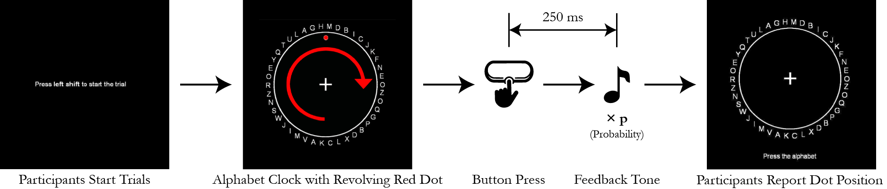
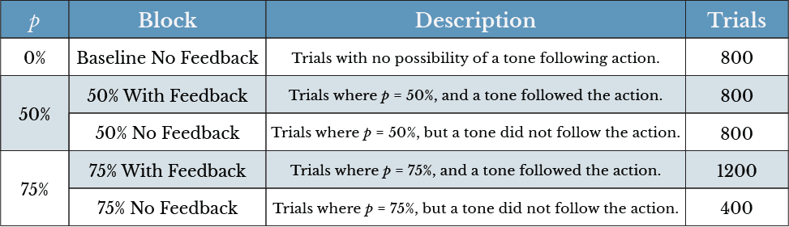

IIT Bombay | HMNN Lab
Do you predict the outcomes of your actions to feel in control?
Overview
Elucidated the electrophysiological correlates of Sense of Agency and Intentional Binding using a feature engineering and machine learning approach.
Role
Research Project Intern (Visiting Student)
Team
Prof. Nivethida T, Principal Investigator
Prof. Rashmika Patole, Advisor
Prof. Raghav Lakshminarayanan, Advisor
Sainath Murali, Project Assistant
Timeline
January 2023 to July 2023
Academic Output
BTech Dissertation
Background
What is Sense of Agency?
As humans, we are used to feeling as though we are in charge of our actions. This experience of being in control, called Sense of Agency, is largely influenced by the consequences observed due to carrying out a particular action. Sense of Agency is central to the experience of being an autonomous and active agent in the world. Understanding how the brain generates this Sense of Agency is a central question in neuroscience, with implications for fields ranging from philosophy and psychology to robotics and AI.
Diving Deeper
Components and Measurement.
Cognitive processes can access various signals produced by the brain that contribute to a Sense of Agency at various moments. While sensory feedback signals are active after the action has been completed, premotor signalling occurs before the action begins. These two components are called retrospective and prospective respectively.
Previous experiments have shown that Sense of Agency can be studied through Intentional Binding - the subjective experience of the time which has passed between an action and its consequent outcome. The experiment we used to study Sense of Agency during this internship focuses on using Intentional Binding as a subjective measure.
Setting Sights
Problem Statement.
The aim of the project is to elucidate the neural correlates between the prospective Sense of Agency and intentional binding experimentally. The objectives of the project can be summarized as the following:
- To demonstrate the role of the prospective component of Sense of Agency using machine learning classifiers.
- Build a classifier models relying upon specific features of a given premotor EEG signal as input to categorize data into various probability blocks.
- To localize the effects of intentional binding and Sense of Agency in the brain, narrowing down the source locations and frequency bands.
Getting the Data
The Paradigm.
A modified Libet's Clock method was used to collect the required data. The above paradigm was conducted on 25 healthy adults who volunteered for the study (13 females, 12 males). 64-channel EEG data was recorded in an acoustically and electromagnetically attenuated room using Brain Vision actiCHamp Plus2. All electrophysiological data was recorded at a 1000 Hz sampling rate.
The revolving alphabet clock was presented to the participants on a monitor screen. Participants were asked to perform a voluntary movement by pressing the spacebar key anytime according to their wish after one complete rotation. 250 milliseconds later, a tone was played in accordance to a probability function.
Approximately one rotation later, the clock disappeared and then was shown again with the instructions to mark the position of the red dot at which they pressed the button. The time difference between the percepted button press and actual button press is calculated and saved as a measure of the judgement error.
Creating Test Conditions
Probability Blocks to Simulate Outcome Predictability.
A probability function was used to determine whether a tone is to be played as feedback to the voluntary movement or not. Probability functions of 0% (baseline), 50% and 75% were used to generate data in five blocks as shown below. All blocks were pooled for further steps.
Guided by Insight
Tackling the Data.
The aim of this methodology is to be able to classify between different sets of probability blocks based on extracted frequency and time domain features. Choosing the correct antagonistic blocks for binary classification will be helpful to establish the existence of EEG signal markers which exist as differences between these two blocks.
The collected EEG data is analyzed subject-wise using the Welch’s Method for spectral density estimation. Based on these features extracted across different frequency ranges, they are attempted to be classified into the different probability blocks. Along with the frequency domain features, two time domain features are also computed for each EEG channel. To maintain information of the generic shape of the EEG amplitude, the overall Area Under the Curve (AUC) and slope is computed.
Different standardization techniques, feature selection methods, and machine learning models were tried and tested in this approach.
Drumroll
Results.
All the data processing steps are executed in MATLAB. Following this, the PSD and AUC/Slope features are also extracted in MATLAB using the pwelch and trapz functions. Once the features are extracted, they are imported to Python for the machine learning and analysis steps. The binary classifiers are built across three groups:
- 50 No Feedback vs 75 No Feedback
- 50 Feedback vs 75 Feedback
- Baseline No Feedback vs 75 Feedback
Of the three mentioned binary classification problems, the highest predictabilities were observed in the 50 No Feedback vs 75 No Feedback blocks. Upon examining the intentional binding effects, it was also observed that the judgement error is lower for the subjects in the 75 No Feedback block than the 50 No Feedback block. This bolsters the idea that one’s own actions and experiences are essentially related to predictions of outcomes rather than merely judgements drawn in hindsight after the fact.